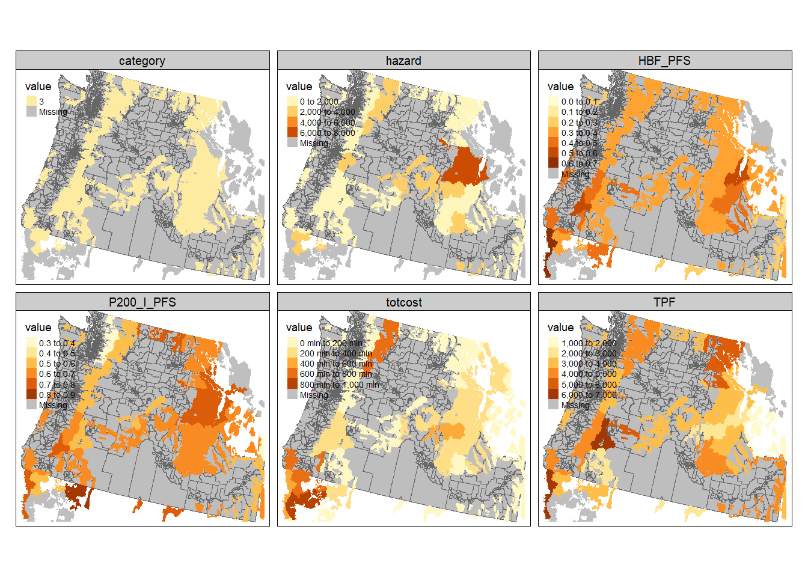

library(sf)
library(tidyverse, quietly = TRUE)
library(terra)
library(tmap, quietly = TRUE)
download_unzip_read <- function(link){
tmp <- tempfile()
download.file(link, tmp)
tmp2 <- tempfile()
unzip(zipfile=tmp, exdir=tmp2)
shapefile.sf <- read_sf(tmp2)
}
fs.shapefile <- download_unzip_read(link = "https://data.fs.usda.gov/geodata/edw/edw_resources/shp/S_USA.AdministrativeForest.zip")Assignment 7 Solutions: Building Spatial Databases
1. You’ll need to download the FS boundary shapefiles then load in all of the different spatial and tabular datasets.
The trickiest part here is just downloading the FS data (made more difficult because they updated the data on 26 Nov 2023). Once you load the function, you should be able to run it using the current link to the Administrative Forest Boundaries data. Because we already know there are empty geometries in the cejst dataset, we go ahead and drop those here.
cejst.pnw <- read_sf("data/opt/data/2023/assignment07/cejst_pnw.shp")%>%
filter(., !st_is_empty(.))
incidents.csv <- read_csv("data/opt/data/2023/assignment07/ics209-plus-wf_incidents_1999to2020.csv")
land.use <- rast("data/opt/data/2023/assignment07/land_use_pnw.tif")
fire.haz <- rast("data/opt/data/2023/assignment07/wildfire_hazard_agg.tif")2. Validate your geometries and make sure all of your data is in the same CRS.
We start by checking to make sure the rasters have the same CRS (because we’d like to avoid projecting rasters). They don’t so we’ll use the land use data as the template as the interpolation for continuous data is a little less error prone. We use the
terra::projectfunction to reproject the rasters and then usesf::st_transformto reproject all of the vector data. You’ll notice that some of the coordinates for the incidents areNAwe need to get rid of those before we can convert to ansfobject. We do that with a call tofilterbefore usingst_as_sf.
crs(land.use) [1] "PROJCRS[\"Albers_Conical_Equal_Area\",\n BASEGEOGCRS[\"WGS 84\",\n DATUM[\"World Geodetic System 1984\",\n ELLIPSOID[\"WGS 84\",6378137,298.257223563,\n LENGTHUNIT[\"metre\",1]]],\n PRIMEM[\"Greenwich\",0,\n ANGLEUNIT[\"degree\",0.0174532925199433]],\n ID[\"EPSG\",4326]],\n CONVERSION[\"Albers Equal Area\",\n METHOD[\"Albers Equal Area\",\n ID[\"EPSG\",9822]],\n PARAMETER[\"Latitude of false origin\",23,\n ANGLEUNIT[\"degree\",0.0174532925199433],\n ID[\"EPSG\",8821]],\n PARAMETER[\"Longitude of false origin\",-96,\n ANGLEUNIT[\"degree\",0.0174532925199433],\n ID[\"EPSG\",8822]],\n PARAMETER[\"Latitude of 1st standard parallel\",29.5,\n ANGLEUNIT[\"degree\",0.0174532925199433],\n ID[\"EPSG\",8823]],\n PARAMETER[\"Latitude of 2nd standard parallel\",45.5,\n ANGLEUNIT[\"degree\",0.0174532925199433],\n ID[\"EPSG\",8824]],\n PARAMETER[\"Easting at false origin\",0,\n LENGTHUNIT[\"metre\",1],\n ID[\"EPSG\",8826]],\n PARAMETER[\"Northing at false origin\",0,\n LENGTHUNIT[\"metre\",1],\n ID[\"EPSG\",8827]]],\n CS[Cartesian,2],\n AXIS[\"easting\",east,\n ORDER[1],\n LENGTHUNIT[\"metre\",1,\n ID[\"EPSG\",9001]]],\n AXIS[\"northing\",north,\n ORDER[2],\n LENGTHUNIT[\"metre\",1,\n ID[\"EPSG\",9001]]]]"crs(fire.haz)[1] "PROJCRS[\"unnamed\",\n BASEGEOGCRS[\"NAD83\",\n DATUM[\"North American Datum 1983\",\n ELLIPSOID[\"GRS 1980\",6378137,298.257222101004,\n LENGTHUNIT[\"metre\",1]]],\n PRIMEM[\"Greenwich\",0,\n ANGLEUNIT[\"degree\",0.0174532925199433]],\n ID[\"EPSG\",4269]],\n CONVERSION[\"Albers Equal Area\",\n METHOD[\"Albers Equal Area\",\n ID[\"EPSG\",9822]],\n PARAMETER[\"Latitude of false origin\",23,\n ANGLEUNIT[\"degree\",0.0174532925199433],\n ID[\"EPSG\",8821]],\n PARAMETER[\"Longitude of false origin\",-96,\n ANGLEUNIT[\"degree\",0.0174532925199433],\n ID[\"EPSG\",8822]],\n PARAMETER[\"Latitude of 1st standard parallel\",29.5,\n ANGLEUNIT[\"degree\",0.0174532925199433],\n ID[\"EPSG\",8823]],\n PARAMETER[\"Latitude of 2nd standard parallel\",45.5,\n ANGLEUNIT[\"degree\",0.0174532925199433],\n ID[\"EPSG\",8824]],\n PARAMETER[\"Easting at false origin\",0,\n LENGTHUNIT[\"metre\",1],\n ID[\"EPSG\",8826]],\n PARAMETER[\"Northing at false origin\",0,\n LENGTHUNIT[\"metre\",1],\n ID[\"EPSG\",8827]]],\n CS[Cartesian,2],\n AXIS[\"easting\",east,\n ORDER[1],\n LENGTHUNIT[\"metre\",1,\n ID[\"EPSG\",9001]]],\n AXIS[\"northing\",north,\n ORDER[2],\n LENGTHUNIT[\"metre\",1,\n ID[\"EPSG\",9001]]]]"fire.haz.proj <- project(fire.haz, land.use)
crs(fire.haz.proj) == crs(land.use)[1] TRUEfs.shapefile.proj <- fs.shapefile %>%
st_transform(., crs=crs(land.use))
cejst.proj <- cejst.pnw %>%
st_transform(., crs=crs(land.use))
incidents.proj <- incidents.csv %>%
filter(., !is.na(POO_LONGITUDE) | !is.na(POO_LATITUDE) ) %>%
st_as_sf(., coords = c("POO_LONGITUDE", "POO_LATITUDE"), crs= 4269) %>%
st_transform(., crs=crs(land.use))Once we’ve gotten everything into the same CRS, we can check for valid geometries. Unfortunately, the FS boundary file has some invalid geometries, so we’ll fix those with
st_make_valid.
all(st_is_valid(fs.shapefile.proj))[1] FALSEall(st_is_valid(cejst.proj))[1] TRUEall(st_is_valid(incidents.proj))[1] TRUEfs.shapefile.proj.valid <- st_make_valid(fs.shapefile.proj)
all(st_is_valid(fs.shapefile.proj.valid))[1] TRUE3. Smooth the wildfire hazard and land use datasets using a 5s5 moving window; use the mean for the continuous dataset and the mode for the categorical dataset.
Smoothing the two rasters is relatively straightforward using the
focalfunction. We set thewargument to be 5 so that we get the 5x5 moving window and then specify the function for each.
hazard.smooth <- focal(fire.haz.proj, w=5, fun="mean")
land.use.smooth <- focal(land.use, w=5, fun="modal")
levels(land.use.smooth) <- levels(land.use)4. Estimate the total cost of the incidents within each forest (PROJECTED_FINAL_IM_COST contains this value for each incident).
This one is a little trickier. First, we need to restrict the incidents and forests to the area for which we have data. Then, we’ve got to join the incident to the appropriate forest. Finally, we’ve got to summarize the incident cost by each forest. We use
st_cropso that we can cut off the datasets at the actual bounding boxes (rather than looking for the observations that intersect). Once we do that, we need to join the incidents to the forests (usingst_join). Once we’ve got the incidents linked to forests, we can usegroup_by,summarise, andsumto create a new, summary level variable that is the total cost. The last step is to join that value back to the original forest geometries.
incidents.pnw <- st_crop(incidents.proj, st_bbox(cejst.proj))Warning: attribute variables are assumed to be spatially constant throughout
all geometriesforest.pnw <- st_crop(fs.shapefile.proj.valid, st_bbox(cejst.proj))Warning: attribute variables are assumed to be spatially constant throughout
all geometriesincidents.forest <- incidents.pnw %>%
st_join(x=., forest.pnw, join=st_within, left=FALSE)
incidents.summary <- incidents.forest %>%
st_drop_geometry() %>%
group_by(FORESTNAME) %>%
summarise(., totcost = sum(PROJECTED_FINAL_IM_COST, na.rm=TRUE))
forest.join <- forest.pnw %>%
left_join(., incidents.summary)Joining with `by = join_by(FORESTNAME)`5. Next join 3 attributes of your choosing from the CEJST and the extracted fire and land cover values to your dataframe.
This step asks you to do 2 different things: join some tabular elements from the CEJST dataset to your forest datasets and extract values from the raster datasets. We first use
selectto keep only the total population (TPF), housing burden (HBF_PFS), and percent of population >200% below the poverty level (P200_I_PFS). Then, we can use thest_joinfunction again to attribute our forest data with the appropriate CEJST data andsummariseit to the forest level. Once we’ve got our vector data attributed, we can use it to extract the appropriate values from the rasters. Becauseterra::extractreturns the values in the order they are listed in the data, we just usecbindto join the columns to our forest data and then userenameto make the columns are little more sensible.
cejst.select <- cejst.proj %>%
select(., c(TPF, HBF_PFS, P200_I_PFS))
forest.cejst <- forest.join %>%
st_join(., y=cejst.select, join=st_intersects) %>%
group_by(FORESTNAME) %>%
summarise_at(vars(totcost:P200_I_PFS), mean, na.rm=TRUE)
forest.landuse.ext <- terra::extract(x=land.use.smooth, y = vect(forest.cejst), fun="modal", na.rm=TRUE)
forest.firehaz.ext <- terra::extract(x= hazard.smooth, y = vect(forest.cejst), fun="mean", na.rm=TRUE)
forest.cejst.join <- cbind(forest.cejst,forest.landuse.ext$category, forest.firehaz.ext$focal_mean) %>%
rename(category = "forest.landuse.ext.category", hazard = "forest.firehaz.ext.focal_mean")6. Make a set of maps that shows the Forest-level values for all of your selected variables.
You could certainly make a map for each variable individually, but that is long and tedious. Here, we’ll use
tm_facetsagain to create maps of all of our variables. To do that, we need the data in long format so we usepivot_longerto create a column with the variable name (taken from the column) and a column with the numeric value (take from the actual observation). Note that because a column cannot have mixed datatypes, the landcover data has to remain as the numeric code. We could fuss with that more, but for now all of the focal landcover values are forest so there’s not a ton of reason to do this. Once we’ve got the data in long format, it’s a simple call totmapto make make all of our maps.
forest.cejst.long <- forest.cejst.join %>%
pivot_longer(., cols =totcost:hazard, names_to="variable", values_to = "value")
tm_shape(cejst.proj) +
tm_polygons(col="gray") +
tm_shape(forest.cejst.long) +
tm_fill(col="value") +
tm_facets(by = c("variable"), free.scales.fill = TRUE)